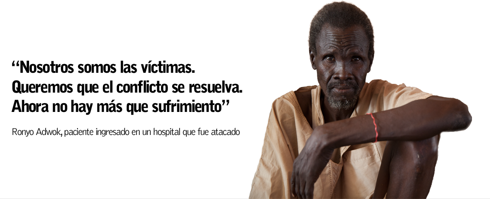
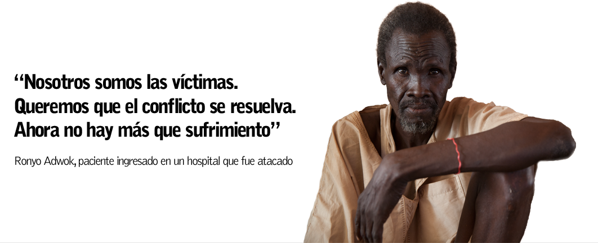

Fue un año efervescente. En paralelo al florecimiento de la Primavera Árabe, África subsahariana también vivió en 2011 su hecho histórico, su momento democrático. Tras la celebración de un referéndum, Sudán del Sur se proclamó independiente el 9 de julio y cambió el mapa del continente. Atrás quedaban décadas de guerra civil: se hacía realidad una aparente solución política a la rivalidad histórica entre el norte y el sur. ¿Qué ha pasado desde entonces? ¿Qué futuro le espera al país más joven del mundo?
En los albores de la independencia se respiraba optimismo. John Aken, de 36 años, vivía en Darfur, en el oeste de Sudán, cuando se convocó la consulta, que arrojó un resultado abrumador: el 98,83 por ciento de los censados dijeron sí en enero de 2011 a la creación del nuevo estado. "Cuando nos fuimos a Darfur, a causa de la segunda guerra sudanesa, yo tenía nueve años. Me quedé allí más de veinte años y me casé", cuenta ya desde la región sursudanesa de Bahr el Ghazal del Norte, adonde volvió tras la declaración de independencia. "Soy ciudadano de Sudán del Sur porque cuando voy por la calle la gente no me señala para decirme que no soy de aquí", dice aliviado.
John tiene seis hijos y vive en una escuálida cabaña del condado de Gok Machar, cerca de la disputada frontera entre los dos Sudanes. A su retorno, las autoridades de Sudán del Sur le asignaron unas tierras. Es uno de los llamados retornados: la población negra que vivía en el norte árabe y que tras la independencia se mudó al nuevo país para reintegrarse en una sociedad con la que comparte lazos étnicos y culturales. "Me casé en Darfur, pero me di cuenta de que tenía que volver a casa", explica John.
Más de tres años después, Jartum y la cuestión norte-sur parecen haber pasado a un segundo plano. La crisis interna que estalló en diciembre de 2013 ha asolado a una población en unas condiciones de vida ya de por sí deplorables. La violencia, la desnutrición y las epidemias hacen mella en un país cuyo sistema sanitario no es capaz de lidiar con las necesidades médicas más básicas de la población, una tarea que intentan cumplir organizaciones internacionales de ayuda humanitaria. Es el lugar del mundo con una tasa de mortalidad materna más alta y tiene alarmantes tasas de desnutrición en determinadas zonas, algo que, combinado con el actual escenario de violencia, ha puesto a casi la mitad de la población al borde del precipicio. Según estimaciones de Naciones Unidas, unos cuatro millones de sursudaneses (de una población de once millones) se enfrentan a una grave situación de inseguridad alimentaria. El sistema de ayuda humanitaria, con la ONU a la cabeza, está fracasando a la hora de reaccionar y asistir a una población desesperada. ¿Cómo se ha llegado hasta aquí?
Sudán del Sur nació con más de 600.000 kilómetros cuadrados, una superficie algo mayor que la península ibérica. Atravesado por el Nilo Blanco, el país no tiene salida al mar y está encajonado entre las montañas de Nuba, el desierto etíope y la densa vegetación de África Central. Su economía depende de forma salvaje del petróleo: los yacimientos se concentran en los estados fronterizos de Unidad y Alto Nilo, que paradójicamente están entre las zonas más depauperadas del país. Estas fueron también las regiones que recibieron la mayoría de los refugiados que llegaron procedentes del norte y se ubicaron en campos donde la ayuda humanitaria se hizo imprescindible.
La independencia de Sudán del Sur no se tradujo en paz en la frontera porque esta no fue delimitada. En muchos puntos, es imposible saber si una carretera se encuentra en Sudán o Sudán del Sur. Varias disputas limítrofes, algunas íntimamente ligadas al uso del petróleo, quedaron sin resolver y están en el origen del sufrimiento de miles de personas. Son las heridas sin cerrar de la separación sudanesa. Uno de los puntos más calientes fue Kordofán del Sur (Sudán), de donde llegó un río de refugiados hacia Sudán del Sur, en particular a los estados de Unidad y Alto Nilo. Tras la independencia, Sudán del Sur acogió en campamentos a más de 230.000 refugiados, la mayoría de ellos en estas zonas.
Pero si bien estos refugiados pudieron registrarse ante la Agencia de la ONU para los Refugiados (ACNUR), hubo otros que se quedaron en el limbo y cuya caída en el olvido ilustra a la perfección las contradicciones del sistema de ayuda de la ONU y del proceso que desembocó en la independencia de Sudán del Sur. A finales de 2012, las hostilidades fronterizas se trasladaron al oeste. Miles de personas huyeron de los bombardeos a lo largo del río Kiir, una disputada zona de nadie. Unas 26.000 personas llegaron al estado sursudanés de Bahr el Ghazal del Norte. Nadie sabía cómo llamarlas. Las agencias de la ONU los definieron como "retornados espontáneos" y esperaban que se integraran sin más en las comunidades locales, ignorando así sus necesidades específicas. "A MSF no le importa si son retornados voluntarios, desplazados o refugiados, pero las agencias humanitarias tuvieron problemas para entender qué asistencia podían ofrecer porque es difícil determinar el estatus de esta población", denunció el entonces coordinador de MSF en la zona, Shaun Lummis.
Sin techo ni asistencia. En esta situación quedaron miles de personas que huyeron de la violencia en la frontera entre Sudán y Sudán del Sur en 2013. Este campo de desplazados se halla en el estado de Bahr el Ghazal del Norte.
Comunidades enteras que huyeron del río Kiir en 2013 se esparcieron en una decena de campos olvidados por las agencias humanitarias.
"Cuando vi que ardían nuestras casas, le dije a mi gente que no quedaba nada, que lo mejor era irnos", dice Anthilio Akon, líder de un pueblo que escapó de las orillas del río Kiir.
La familia de Anthilio Akon era una de las pocas que disfrutaba de un techo bajo el que refugiarse en el campo de Ajok Wol: muchas otras sobrevivían bajo escuálidos castillos de ramas de árbol.
La temporada de lluvias, que dura varios meses, golpea a la población más desprotegida en Sudán del Sur.
El difícil acceso impone retos logísticos para los equipos humanitarios, que intentan llegar a las poblaciones más aisladas, como esta, situada en una zona remota de Bahr el Ghazal del Norte.
MSF denunció las condiciones deplorables de los campos y la ONU se comprometió a una distribución de alimentos, pero sigue siendo una ayuda insuficiente.
No se puede entender la violencia que hoy está desgarrando Sudán del Sur sin las dos guerras sudanesas (1955-1972 y 1983-2005), que dejaron millones de muertos y desplazados, y el papel que desempeñó en la última el Ejército de Liberación del Pueblo de Sudán (ELPS). Al timón de este grupo rebelde que se enfrentó a Jartum estaba su líder histórico, John Garang, que siempre tuvo problemas para unificar el movimiento y sofocar las revueltas internas de facciones militares. Garang murió en un accidente de helicóptero en 2005, justo cuando arrancó el proceso de paz que desembocó en la independencia de Sudán del Sur en 2011. Tomó el relevo Salva Kiir, que se proclamó presidente, y fue nombrado vicepresidente otro de los cabecillas históricos del ELPS, Riek Machar. El equilibrio se rompió en diciembre de 2013, cuando un agraviado Machar, que había sido expulsado del gobierno meses atrás, encabezó una lucha armada que enfrentó a sus seguidores con los del presidente.
Con datos de Naciones Unidas de septiembre de 2014
Pronto la violencia se dirigió contra mercados, hospitales, lugares públicos y ciudades enteras. Las principales comunidades étnicas del país (dinka, nuer y shilluk) se convirtieron en víctimas de un conflicto que ha obligado a 1,7 millones de personas a abandonar sus hogares, 1,4 millones de ellas dentro del mismo país. Una de ellas es Ronyo Adwok, un profesor de 59 años que impartía Historia en Malakal, una extensa cuadrícula a orillas del Nilo en la que vivían unas 150.000 personas. Ciudad estratégica y capital del estado sursudanés con mayor producción petrolífera, Malakal ha sido uno de los puntos más castigados por la guerra y ha cambiado de manos en varias ocasiones.
 

El profesor descansaba en casa el 18 de febrero cuando se desató una de las peores batallas por Malakal entre las fuerzas gubernamentales y de la oposición. Su domicilio fue atacado y se lastimó una pierna. Aturdido, salió a la calle y acudió al Hospital Universitario de Malakal. Pero ni siquiera los pacientes fueron respetados durante aquellos días. "Entraban cada día diez o quince hombres armados en el hospital. Pedían móviles y dinero a la gente. Si no les dabas nada, te disparaban. También a los que estábamos ingresados. Muchos fueron asesinados en la sala en la que yo estaba. Incluso se llevaron a varias mujeres", relata. En total, los equipos de MSF hallaron once cadáveres en el hospital y otros tres cerca de una de las entradas del centro. "Siento que cada vez hay menos respeto por la acción humanitaria –lamenta Carlos Francisco, coordinador de MSF en Malakal–. No se respetan ni las instalaciones, ni el personal médico ni los pacientes".
Las atrocidades de Malakal no son una excepción, sino más bien un patrón: la destrucción de ciudades enteras y el nulo respeto a los hospitales se han reproducido en varios puntos del país. La lista es interminable. En Leer, estado de Unidad, los equipos de MSF descubrieron un hospital quemado y saqueado cuando intentaron volver a trabajar en él. En el Hospital Estatal de Bentiu, también en Unidad, al menos 33 personas fueron asesinadas en abril, según testigos consultados por MSF. Sobre las calles yacieron durante días cadáveres de civiles en avanzado estado de descomposición.
A la espera de la evolución del contexto bélico, unos 100.000 desplazados se hacinan en campos administrados por la ONU, alguno de los cuales ha sido incluso atacado. El campamento de Tomping, en la misma capital, se inundó durante las primeras semanas de la temporada lluviosa sin que nadie pusiera coto al problema. En Malakal, los alrededor de 18.000 desplazados sufren la escasez de agua potable y viven en unas condiciones deplorables.
Una de las víctimas de la guerra que se refugiaba en marzo en el campo de Malakal es Amani Bashir, de 20 años. En su figura se resumen los últimos años de historia de la región. Es de padre sudanés y madre sursudanesa. Se crio en el actual estado sudanés de Nilo Azul pero hace dos años se mudó con su madre a Malakal, en Sudán del Sur. Ahora que las tensiones entre el norte y el sur parecen haberse relajado, Amani ha sido víctima del conflicto civil que azota a Sudán del Sur.
"Cuando los combates estallaron en la ciudad, escapamos de casa y fuimos hacia el río. Intentamos escondernos pero me dispararon en la pierna", recuerda Amani, que observa su pierna lastimada e intenta acomodarla en un hospital improvisado de MSF ubicado en el recinto de la ONU en Malakal. "Los hombres armados nos llevaron a la iglesia, donde se refugiaba más gente. Intentaron violar a mi madre, pero nos resistimos y también le dispararon en la pierna", dice Amani. Apesadumbrada, la joven mira a su madre, que también tiene la pierna vendada, y a su hijo pequeño, que duerme. Tiene el gesto impertérrito, como si no quisiera revelar más sentimientos. No sabe adónde irá cuando se recupere, confiesa. Tampoco ha decidido qué hará con su familia ni si volverá a Sudán. Solo tiene una cosa clara: no se quedará en Malakal.